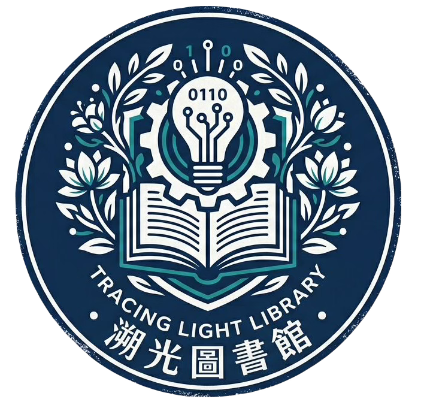

<footer class="site-footer">
  <div class="container footer-grid">
    <section class="footer-brand" aria-labelledby="footer-library-name">
      

      <div>
        <h2 id="footer-library-name">溯光圖書館</h2>
        <p>追隨文字的微光，找到心靈的歸向。</p>
      </div>
    </section>

    <section class="footer-contact" aria-labelledby="footer-contact-title">
      <h2 id="footer-contact-title">聯絡我們</h2>
      <address>
        <p>地址：香港新界沙田晨光道 18 號</p>
        <p>電話：<a href="tel:+85226001234">2600 1234</a></p>
        <p>電郵：<a href="mailto:library@tracinglight.edu.hk">library@tracinglight.edu.hk</a></p>
      </address>
    </section>

    <section class="footer-hours" aria-labelledby="footer-hours-title">
      <h2 id="footer-hours-title">開放時間</h2>
      <p>星期一至五：08:15–16:30</p>
      <p>星期六、日及公眾假期：休館</p>
    </section>

    <section class="footer-links" aria-labelledby="footer-links-title">
      <h2 id="footer-links-title">快速連結</h2>
      <ul>
        <li><a href="news.html">最新消息</a></li>
        <li><a href="reserve.html">預約服務</a></li>
        <li><a href="schedule.html">當值時間</a></li>
        <li><a href="about-us.html#faq">常見問題</a></li>
      </ul>
    </section>
  </div>

  <div class="footer-bottom">
    <div class="container">
      <p>&copy; <span id="current-year">2026</span> 溯光圖書館．版權所有。</p>
    </div>
  </div>
</footer>